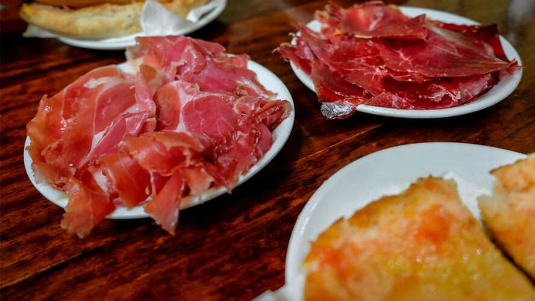
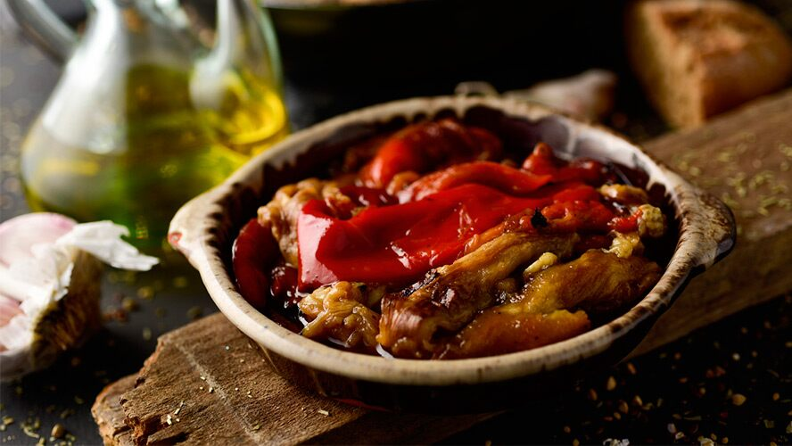
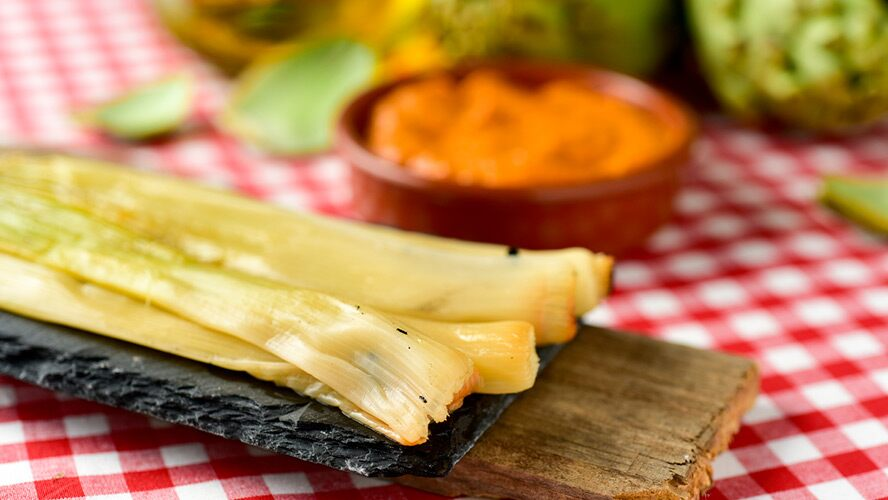
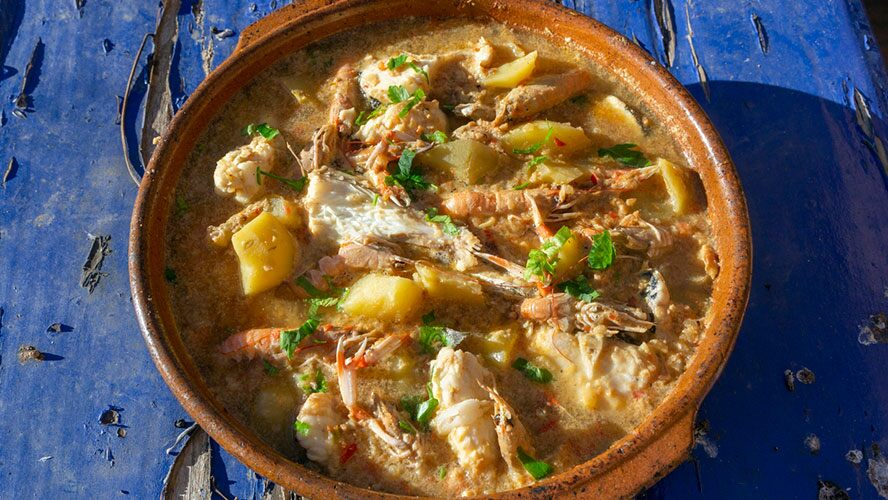
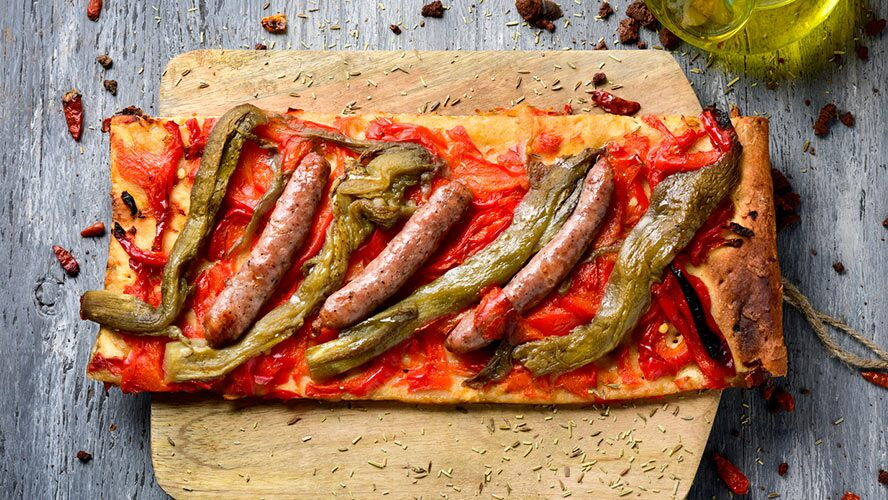
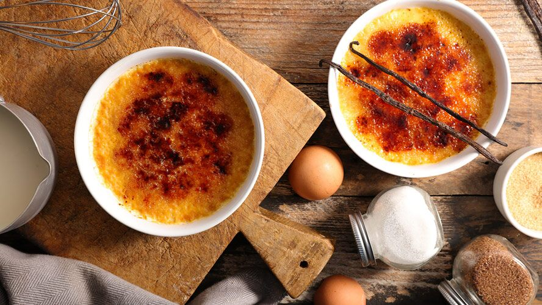

Comida típica de Barcelona, entre el mar y la montaña
Barcelona es uno de los principales destinos turísticos de Europa y su gastronomía uno de sus principales atractivos. Con miles de restaurantes y una amplia oferta gastronómica, es importante tener claro los platos más típicos de la gastronomía catalana para no perderse ninguno si estáis de vacaciones por la ciudad.
Explorar la comida típica de Barcelona es una garantía para poder disfrutar de sabores de mesa deliciosos y muy diversos. Una cocina que hunde sus raíces, fundamentalmente en el Mediterráneo.
pa amb tomàquet

Una comida típica en Barcelona comienza siempre con una buena rebanada de pan tostado acompañada de ajo y tomate restregados y regada con un buen chorro de aceite de oliva virgen extra. Es el célebre pa amb tomàquet, una auténtica enseña de la gastronomía catalana, tan sencillo como jugoso y que hace las veces de omnipresente aperitivo, funcionando también como acompañante del resto de platos que se sirvan durante la comida.
El reino de la escalivada

La escalivada no es más que una ensalada a base de diversas verduras asadas. Fundamentalmente pimiento rojo, berenjena, cebolla y tomate. Estas hortalizas se asan, se cortan en tiras, se limpian de piel y pepitas y se sirven aliñadas con aceite de oliva virgen extra y unas lascas de sal.
Los calçots y su salsa

Los calçots son uno de los platos más populares de la cocina típica de Barcelona durante los meses más fríos del año. Se trata de una comida más asociada con el mundo rural que con la ciudad porque estas cebolletas largas y tiernas requieren de ser quemadas en fuego de leña (envueltas en papel de periódico) para darles su consistencia y, sobre todo, su delicioso sabor entre dulce y ahumado.
El suquet de peix

Los guisos a bases de productos del mar tienen una gran importancia. Fundamentalmente, el suquet de peix, o sopa de pescado. Este es un plato que tiene su origen en la cocina que elaboraban los propios pescadores en sus barcos, utilizando los pescados de morralla. Es decir, los peces que por su tamaño o, por el hecho de ser muy espinosos, no podían venderse en las lonjas. A ese caldo de cocción se añaden patatas y alguna verdura. La combinación de todo ello da como resultado un guiso realmente delicioso.
Coca catalana

Es, fundamentalmente, una base de masa de harina, agua, sal y levadura (igual el pan), sobre la que se pueden agregar todo tipo de ingredientes salados y que se cocinan al horno. Las versiones dulces utilizan una masa a base de huevo, harina y azúcar. Es habitual comparar las cocas con las pizzas, aunque presentan notables diferencias en cuanto a texturas y sabores. Una de las más populares es la coca de Sant Joan (dulce) que se consume durante esa noche mágica.
Crema catalana

Es “el postre”, por definición, en toda Cataluña. Una especie de crème brûlée o natilla, cuya superficie se carameliza utilizando una plancha específica a gran temperatura.